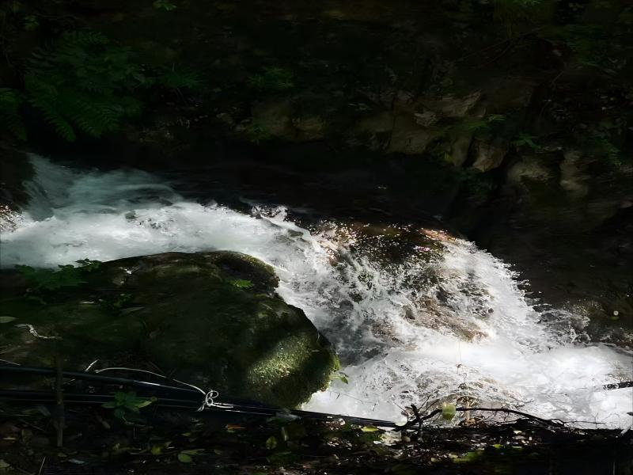

基本信息
地理位置：重渡沟位于豫西山区熊耳山腹地，距洛阳市 118 公里，离栾川县城 48 公里。
景区级别：国家 4A 级旅游景区。
面积：30 平方公里。
景区特色：重渡沟以 “水、竹、农家宾馆” 为主要特色，有 “北国小江南” 的美誉
自然景观
地形地貌：重渡沟属白云石山地地貌，中低山类型，最高海拔 1531 米，最低海拔 520 米，相对高差 900 米。
气候特征：重渡沟处于中国亚热带向暖温带过渡地带，气候适宜，雨量充沛，年平均气温 12.4℃，空气湿润宜人。
动植物资源：重渡沟植被完好，森林覆盖率高达 98%，南北物种兼而有之。有油松、山杨、麻栎、青冈、山榆、椴树等 60 多种乔本树木，红花杜鹃、榛子、伞花胡颓子、雀梅、黄栌、黄荆、苦糖果等 80 余种灌木，草鹿、梅花鹿、獐獾、青羊、野猪、果子狸、画眉、锦鸡等 40 多种森林野生动物，保持着天然的动植物群落。
主要景点
飞虹瀑布：落差 30 米，瀑宽 8 米，分两级贴坡下跌。雨过天晴会从瀑底潭中出现一条彩虹，瀑布便因此而名。
泄愤崖瀑布：崖壁上刻着 “泄愤崖” 三个红字，这三个字是由河南大学教授现代甲骨文研究专家郝文勉先生所书写。泄愤崖瀑布从泄愤崖上落下，故瀑以崖取名。落差 27 米，分三级下跌。最佳观赏部位在中间一级，如白缎被扯成四缕泻入一个石穴中，再从石穴中分散流下。
金鸡谷：是一条狭谷，长约 600 米，平均宽度不足二十米，两侧悬崖峭壁高达百米以上，抬头能看见一线天，苔鲜石上有清泉流过。这种地貌是由断层形成。
金鸡谷瀑布：位于金鸡谷内百米处。落差 15 米，瀑宽 70 厘米，约四百米长，峭壁最高达百米以上，最窄处不过十米，上部沿冲刷的石槽内向下倾泻，中间部分为悬瀑，下部落在石片上，折为两股向右倾斜，布感强烈。相传有金鸡从谷内飞起，引刘秀赶路，所以起名为金鸡瀑布。
双叠瀑布：金鸡河上的双叠瀑布，长约两百余米。金鸡河在这里形成四级瀑布倾泻下来，每两级为一叠，因此而得名双叠瀑布。
菩提树：这棵千年菩提树，有 1500 年的历史，树高 30 余米，树围 3.5 米，春开百花秋结褐果。当地人将它称为娑罗树，它还有一个学名叫做七叶树，每个叶子有七片组成。
锁蛟崖：悬崖高 100 余米，宽 150 米。崖上布满钟乳石，构成了一幅石壁浮雕。
迎宾瀑布：迎宾瀑是进入金鸡河景区的第一条瀑布。岩石上面石刻，是作家张一弓先生来这里游览后，所赋：高峡飞瀑藏幽径，绿水修竹怀古情，竖看山水横看竹，上听鸟语下听泉。
水帘仙宫瀑布：水帘仙宫瀑布是重渡沟三大标志性瀑布之一，水帘仙宫瀑布长 70 米、宽 8 米。水绣石上布满青苔，飞瀑流过白色水链，恰似银线穿珠的珠帘悬挂于悬崖峭壁上而得名。
竹林长廊：重渡沟有一条长廊，长廊两边种植着竹子。
震天雷瀑布：震天雷瀑布是重渡沟的三大标志性瀑布之一。震天雷瀑布距农耕村不远，瀑布泻入两米深的洞内，又从洞壁的孔中流出，瀑声如雷而得名。
农耕村：不秋草堂融合中国传统射艺、锡伯族传统射艺、明德堂弓箭制作三项非物质文化遗产。提供传统射箭体验，弓箭制作体验，射艺文化体验，传统射箭培训以及射艺课程培训等内容。
一线织忆：“一线织忆” 土布织艺体验非遗工坊位于重渡沟风景区农耕村内，室内空间 6 间、开放空间 2 间，总面积约 150㎡。是集展陈老粗布纺织器具、体验传统纺织技艺、售卖老粗布制品、网红打卡为一体的创意空间。
水花磨：水花磨，也叫龙曳磨或水打器。是旧时山里人的一种粮食加工设备，主要用于磨粮食，做豆腐、豆腐脑等，水花磨主要突出以水为动力。重渡沟就利用水的落差，在这里建了水花磨，磨豆浆，做豆腐和酸浆豆腐脑。
田园牧歌：这里展示了 30 年前的中原农村农耕生活所使用的生产工具和生活用品，通过展品再现当时中原农民的生活场景。
狼戴帽饭庄：狼戴帽饭庄食品乡土味浓厚，在这里吃饭的形式不同，有八碗四盘，八大四小富贵不断头等。
酿酒坊：老酒坊是用中国传统手工工艺生产蒸馏酒的地方。土法酿酒工艺包括踩曲、拌料、生蒸、兑曲发酵、蒸馏出酒五个过程。老酒坊里有全套土法酿酒设备，在这里可看到古法酿酒全过程